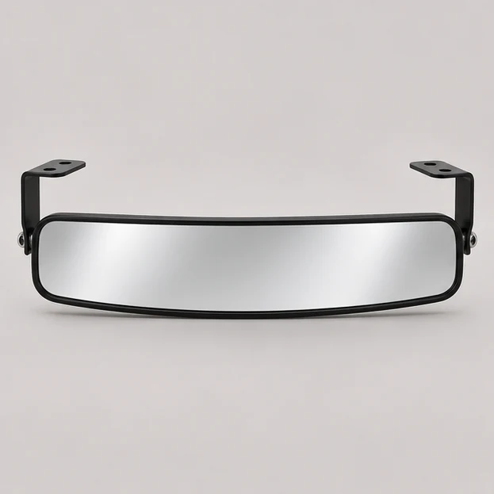

Mirrors & visibility
17-Inch Convex Rearview Mirror
Part No. 03-076
$31.99 USD
A single curved mirror gives the driver a wide view across the rear of the cart.
Check mounting requirements
Requires a drillable front canopy mount
Club Car Precedent · 2004–2016Yamaha Drive Fleet · 2013–2016
Check fit detailsRetailer sets final price, availability and shipping.
Will it fit?
| Model | Catalog years |
|---|---|
| Club Car Precedent | 2004–2016 |
| Yamaha Drive Fleet | 2013–2016 |
Compare the front canopy with the mounting diagram. The 17-inch mirror needs space between the brackets, clearance above the windshield and a mounting surface suitable for the supplied screws.
Installation notes
- Park the cart and check headroom and windshield travel with the mirror held at the proposed location.
- Use the supplied brackets and follow the pilot-hole and screw instructions in the GTW guide for your canopy.
- From the driver’s seat, adjust the rearward view and make sure the assembly stays in position.